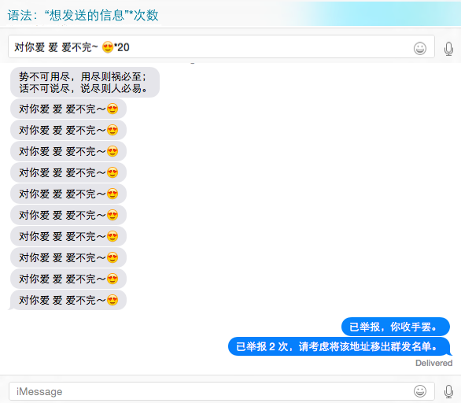

使用 AppleScript 实现信息批量发送功能
抽空又给自动举报脚本 spamshot 更新了一下。本来没啥好更新的，事实上自己水平有限 AppleScript 又那么多限制想折腾点啥大动静也折腾不起来。可一看到前一版本有些问题戳在眼跟前就忍不住要修复，这一“修复”不要紧就改那么两行不好意思发出去啊，还是增加点啥功能吧！加点啥呢？没想法没悬念啊，就前段时间微博上提过的批量发送功能吧。
事实上，刚写 spamshot 时看到 Messages 的文档脑海里就闪过此念头，感觉应该是非常容易实现的。当时怕被滥用就没继续向下寻思，那就这次试试吧！事实证明也确实很简单，十几分钟就搞定了。其它时间基本是花在处理异常输入上。最后，批量发送的语法定为：想发送的信息*次数。简单吧？嘿嘿。
Messages贴图：

以下为代码：
if "*" is in theMessage then set AppleScript's text item delimiters to "*" set multiby to the last text item of theMessage set multinum to 0 try set multinum to multiby as integer end try if multinum > 1 then set msgslice to text items of theMessage set mscount to count of msgslice set mscontent to text items 1 through (mscount - 1) of msgslice as text ignoring white space if mscontent ≠ " " then try display dialog "发送该内容 " & multinum & " 次？" & return & "你可能会被对方举报！！！" buttons {"Cancel", "OK"} default button 1 with title "Are you sure?" with icon note giving up after 5 if button returned of the result = "OK" then if multinum > 10 then send "势不可用尽，用尽则祸必至；" & return & "话不可说尽，说尽则人必易。" to theChat repeat 10 times send mscontent to theChat end repeat else repeat multinum times send mscontent to theChat end repeat end if return " " end if on error eText1 number eNum1 if eNum1 ≠ -128 then display dialog "Some errors happened: " & eNum1 & return & eText1 buttons {"OK"} default button 1 with icon stop giving up after 5 return " " end if end try end if end ignoring end if end if
同时给加了个最多发送十次的限制，但基本是防一防小小白。不过也不必过分担心滥用，spamshot 到现在已经非常稳定，想要举报也是分分钟的事儿～ 更多希望是同事、朋友间逗逗乐子而已，无聊的时候调戏调戏 spamer 。。。
其它更新的地方就是加了匿名举报选项，提高了垃圾信息接收时间的精确性，以及一些小问题的修复。。。更新点还真是少哇 -_-# 不过这次我保障 spamshot 没大 bug 的话，我再也不折腾了！！！
回想起近一个月前开始写 spamshot 的时候，对 AppleScript 的了解还基本是零。边学边写就这么过来了，过程中发现 AppleScript 的很多问题。估计专业编程的都不会认为这是一门编程语言吧？大多不屑一顾怕玩这东西掉身价。还好我只是一名软件爱好者，毫无心理压力呀 -_-#
AppleScript 的优势在于：与系统应用结合紧密，熟悉后半小时甚至几分钟内就能出成果。用来进行图片/PDF 处理、批量格式转换、日常文件管理、Office软件/Email 批量发送等等。刚才我又想到：过年过节还可以读取通讯录从祝福短信中随机挑一个发出去啊，保障每人收到的祝福都不一样，哈哈。
使用过程最重要的还是要明白 AppleScript 的局限性在哪里，否则就会像我刚开始学那会儿痛苦异常 =_= 当然要强力的话 AppleScript 还可引入 objc，还可以用 javascript 写，但我肯定不会深入折腾。投入产出比太低，有空折腾折腾 office/email 方面的。
废话貌似又写了不少，本来只想贴代码测试博客 AppleScript 语法高亮的。。。赶紧收手，贴图再想个文章标题！就酱～
文章链接：https://macplay.github.io/posts/shi-yong-applescript-shi-xian-xin-xi-pi-liang-fa-song-gong-neng/
发布/更新于：
版权声明：如无特别说明，本站文章均遵循 CC BY-NC-SA 4.0 协议，转载请注明作者及出处。